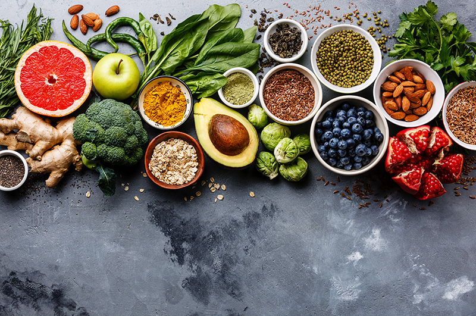
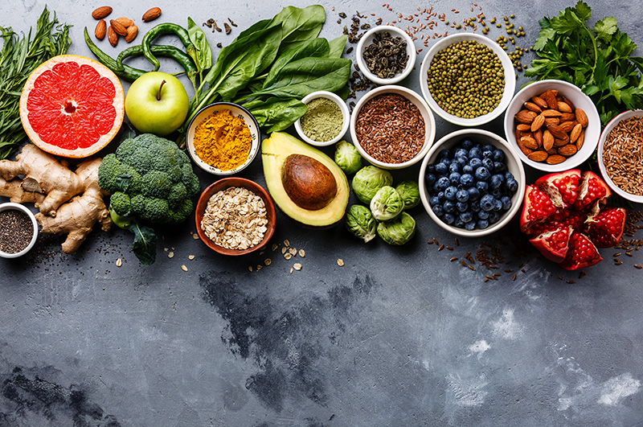

O que é Alimentação Saudável?
A alimentação saudável é essencial para manter um corpo saudável e uma mente ativa. Envolve consumir uma variedade de alimentos que proporcionam os nutrientes necessários.
A alimentação saudável é essencial para manter um corpo saudável e uma mente ativa. Envolve consumir uma variedade de alimentos que proporcionam os nutrientes necessários.
